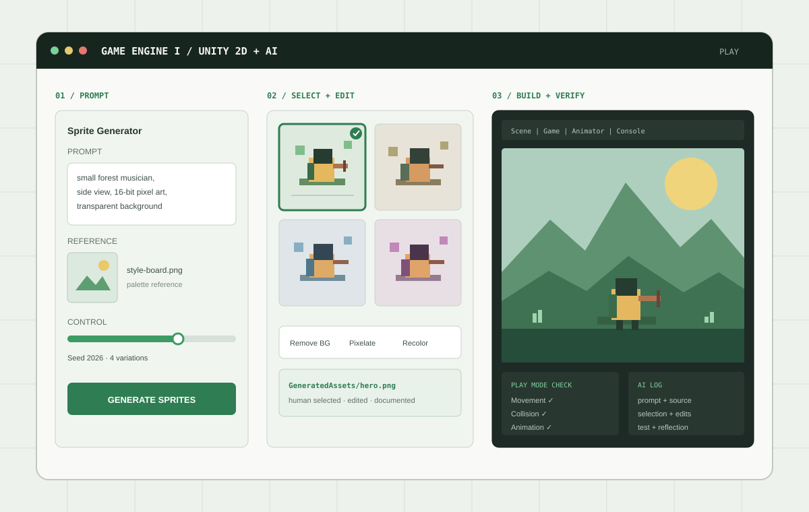

Sprite Generator로 방향 탐색
Project 창에서 Create → 2D → Generate Sprite를 열고 텍스트 프롬프트와 참조 이미지를 함께 사용한다. 캐릭터, 수집물, 장애물, 아이콘을 동일한 팔레트와 시점으로 설계하고 negative prompt로 원하지 않는 요소를 제한한다.
Unity 6.3 LTS / 2D / Generative AI
Unity 2D 게임의 구조를 직접 만들고 이해한 뒤, 생성형 AI로 이미지와 사운드를 제작하고 코딩을 보조받으며 결과를 스스로 검증하는 프로젝트 기반 수업입니다.

Unity fundamentals first, AI as a controlled production tool.
본 강의는 Unity 6.3 LTS를 활용하여 2D 게임의 기획부터 구현, 테스트, 빌드까지의 전체 제작 과정을 학습하는 이론·실습 중심의 교과목이다. 게임 개발이나 프로그래밍 경험이 없는 학생도 참여할 수 있도록 Unity Editor의 기본 사용법과 Scene, GameObject, Component, Transform, Prefab 등의 핵심 개념부터 단계적으로 다룬다. 이후 C# Script, Input System, Rigidbody2D, Collider2D, Trigger, Tilemap, Sprite Animation, UI, Audio 및 게임 상태 관리 등을 학습하며, 캐릭터 이동과 충돌, 수집물, 점수, 성공과 실패, 재시작 기능이 포함된 작은 2D 게임을 제작한다. 매주 수업은 교수자의 이론·설명과 학생의 목표지향 실습을 결합하며, 교시별 운영과 비중은 각 주차의 수업 계획에 따른다.
수업의 후반부에는 Unity의 Sprite Generator와 Texture2D 및 Sound Generator를 활용하여 캐릭터, 오브젝트, UI와 효과음 등의 임시 에셋을 제작하고 실제 게임에 적용한다. 또한 Unity Assistant의 Ask, Plan, Agent 기능을 이용하여 코드를 설명받고 작업 계획을 검토하며 제한된 범위에서 기능 구현을 보조받는 방법을 학습한다. MCP, AI Gateway, Unity CLI와 Pipeline 등 최근 Unity 제작 환경에서 활용되는 AI 연동 및 자동화 방식도 기초 수준에서 살펴본다. 생성형 AI는 게임을 대신 제작하는 도구가 아니라 아이디어를 시각화하고 여러 대안을 비교하며 반복 작업과 오류 해결을 보조하는 제작 도구로 활용한다. 학생은 AI가 생성한 결과를 그대로 사용하는 데 그치지 않고 생성 목적과 프롬프트, 참조 자료, 선택 이유, 직접 수정한 부분 및 테스트 결과를 기록해야 한다. 최종적으로 자신의 전공이나 관심 분야를 반영한 짧고 완결된 2D 게임을 기획하고 제작함으로써 게임 엔진의 기술적 구조와 시각적·청각적 표현, 생성형 AI 기반 제작 방법을 종합적으로 경험한다.
Course goals
본 강의는 학생들이 Unity의 기본 구조와 2D 게임 제작 원리를 이해하고 자신의 아이디어를 실제로 플레이할 수 있는 디지털 콘텐츠로 구현할 수 있도록 하는 것을 목표로 한다. 학생들은 Scene, GameObject, Component, Prefab과 Script 사이의 관계를 이해하고 복잡한 게임 기능을 입력, 조건, 상태 변화와 결과의 작은 단위로 나누어 설계하는 능력을 기른다. C#의 변수, 자료형, 조건문, 함수와 MonoBehaviour의 기본 구조를 학습하고 이를 캐릭터 이동, 충돌, 수집, 점수, 게임 상태와 같은 구체적인 기능에 적용한다. Rigidbody2D와 Collider2D를 활용한 물리적 상호작용, Tilemap을 활용한 레벨 구성, Sprite Animation과 Animator를 활용한 움직임, UI와 Audio를 활용한 시청각 피드백을 하나의 게임 시스템 안에 통합하는 것을 목표로 한다. 또한 게임의 기능을 구현하는 것에서 나아가 사용자가 목표와 상태 변화를 명확하게 이해할 수 있도록 시각적 요소와 인터랙션을 설계하는 능력을 기른다.
수업 후반부에는 생성형 AI를 활용하여 캐릭터와 오브젝트, UI, 효과음 등의 제작 방향을 탐색하고 여러 결과 중 프로젝트에 적합한 결과를 선택하고 수정하는 방법을 학습한다. Ask, Plan, Agent의 차이를 이해하고 AI가 제안한 코드와 프로젝트 변경 사항을 실행 전에 검토하며 최소한의 권한과 범위 안에서 활용하는 습관을 형성한다. Console, Inspector와 Play Mode를 이용하여 AI가 만든 결과를 직접 확인하고 오류와 예상하지 못한 동작을 수정하는 검증 능력도 함께 기른다. 생성 콘텐츠의 출처와 저작권, 개인정보, API key 보안 및 AI 사용 기록의 필요성을 이해하고 책임 있는 제작 태도를 갖추는 것도 중요한 목표이다. 최종적으로 학생이 자신의 전공적 배경과 관심사를 게임의 주제, 시각 스타일, 사운드 및 상호작용 방식에 반영하고 제작 과정과 기술적 구조를 다른 사람에게 논리적으로 설명할 수 있도록 한다.
Learning outcomes
본 강의를 이수한 학생은 Unity 6.3 LTS의 2D 프로젝트를 생성하고 Scene과 Project 구조를 정리하며 GameObject, Component, Transform과 Prefab을 목적에 맞게 구성할 수 있다. C#의 기본 문법과 MonoBehaviour의 작동 방식을 이해하고 Inspector에 노출되는 변수를 활용하여 간단한 게임 기능을 작성하고 수정할 수 있다. Input System을 이용하여 플레이어의 입력을 처리하고 Rigidbody2D와 Collider2D를 활용하여 이동, 충돌 및 물리적 상호작용을 구현할 수 있다. Collision과 Trigger, Layer와 Prefab을 이용하여 수집물, 장애물과 목표 지점을 제작하고 Tilemap을 활용하여 짧은 2D 레벨을 구성할 수 있다. Sprite를 불러오고 분할하여 Animation Clip과 Animator Controller를 제작하며 캐릭터의 상태와 애니메이션을 게임 로직에 연결할 수 있다. UI와 AudioSource를 활용하여 점수, 시간, 성공과 실패, 효과음과 재시작 기능을 구현하고 시작부터 종료까지 완결된 게임 상태를 구성할 수 있다.
Sprite Generator와 Texture2D 기반 이미지 제작 기능을 이용하여 캐릭터, 오브젝트와 UI 후보를 생성하고 배경 제거, 업스케일, 픽셀화, 재채색 및 인페인팅 등의 후처리를 수행할 수 있다. 생성된 스프라이트시트를 직접 수정하고 분할하여 Animation과 Animator에 연결하며, 생성 이미지의 일관성과 게임 화면에서의 가독성을 판단할 수 있다. Unity Assistant의 Ask, Plan과 Agent를 작업 목적에 따라 구분하여 사용하고 AI가 제안한 코드와 변경 사항을 검토한 뒤 Console, Inspector와 Play Mode에서 결과를 검증할 수 있다. MCP와 Unity CLI 기반 자동화의 기본 개념을 이해하고 제한된 명령을 실행한 뒤 예상한 변경 범위와 실제 결과를 비교할 수 있다. 또한 프롬프트, 참조 자료, 생성 결과, 선택 이유, 직접 수정한 부분과 테스트 결과를 제작 기록으로 정리하고 생성 콘텐츠의 출처와 권리를 확인할 수 있다. 최종적으로 하나의 핵심 행동과 명확한 목표, 시각적·청각적 피드백을 갖춘 짧은 2D 게임을 독립적으로 기획하고 제작하며 실행 가능한 build와 Unity project, 영상 및 작품설명서의 형태로 제출하고 발표할 수 있다.
기초 제작 → Ask → Plan → 제한 실행 → 검증 → 기록
학생이 먼저 최소 기능과 placeholder를 직접 만들어 비교 가능한 baseline을 확보한다.
필요한 Component, 코드 흐름과 오류 가능성을 읽기 전용 질문으로 이해한다.
수정할 Script·GameObject·에셋과 완료 조건을 실행 전에 확인한다.
Agent와 MCP는 하나의 작은 작업, 최소 권한, 예상한 파일 범위에서만 사용한다.
Console, Inspector, Play Mode에서 정상·실패·경계 조건을 직접 테스트한다.
프롬프트, 출처, 선택 근거, 사람의 수정, 테스트 결과를 AI 제작 로그에 남긴다.
Generate, select, edit, integrate, and verify.
Project 창에서 Create → 2D → Generate Sprite를 열고 텍스트 프롬프트와 참조 이미지를 함께 사용한다. 캐릭터, 수집물, 장애물, 아이콘을 동일한 팔레트와 시점으로 설계하고 negative prompt로 원하지 않는 요소를 제한한다.
해상도, 생성 개수와 custom seed를 조절해 여러 후보를 비교한다. 생성 횟수나 화려함이 아니라 작은 게임 화면에서의 가독성, 충돌 영역과 실루엣의 일치, 다른 에셋과의 스타일 통일을 기준으로 선택한다.
Remove Background, Upscale, Pixelate, Recolor, Inpaint를 이용해 배경, 해상도, 팔레트와 일부 형태를 정리한다. 결과는 프로젝트의 GeneratedAssets/에서 확인하고 사람이 수정한 버전을 분리해 보관한다.
animation-ready 스프라이트시트를 생성해 Sprite Editor에서 slicing하고 idle·move·hit Animation Clip과 Animator Controller로 연결한다. 프레임 일관성을 직접 고친 뒤 Prefab, Collider2D, Sorting Layer와 함께 실제 장면에서 검증한다.
주 3시간: 교수자 설명 + 목표지향 제작 실습
이론(1시간) 수업 목표, 평가, 2D 게임 제작 흐름, AI 사용 정책과 저작권
실습(2시간) Unity Hub 설치, 로그인과 라이선스 확인, 지정된 Unity 6.3 LTS 설치 및 버전 검증
1교시 설명 Unity Editor의 창과 Project, Scene, GameObject, Component의 관계
2교시 설명과 시연 Transform, 부모·자식, Sprite 정렬과 Prefab 재사용
3교시 목표 실습 통과 기준을 보고 Week02_Playground를 스스로 완성하고 검증
1교시 · Editor 구조 ↗ · 2교시 · 장면 조립 원리 ↗ · 3교시 · Playground 미션 ↗ · 교수자용 전체 운영안 ↗
1교시 · 이론과 설명 Script와 Component, 변수·자료형·함수·조건문을 역할 중심으로 읽기
2교시 · 이론과 설명 MonoBehaviour 생명주기, Inspector 직렬화, 시간 기반 이동·회전 코드 해설
3교시 · 목표지향 개인 실습 하나의 Script와 Prefab으로 세 가지 움직임을 구현하고 필수 기준 8개로 검증
1교시 · C# 코드를 읽는 법 ↗ · 2교시 · 실행 순서와 시간 ↗ · 3교시 · 세 가지 움직임 미션 ↗
과제 1 · Unity 기초 장면과 C# Script1교시 · 이론과 설명 Input System, Action, Binding과 Vector2 입력 의도
2교시 · 이론과 설명 Update와 FixedUpdate, Rigidbody2D·Collider2D, Controller 코드 해설
3교시 · 목표지향 개인 실습 충돌 가능한 4방향 Player를 구현하고 필수 테스트 8개로 검증
1교시 · 이론과 설명 Collision과 Trigger, OnTriggerEnter2D의 성립 조건, Layer와 Tag의 역할
2교시 · 이론과 설명 Grid·Tilemap·Tile Palette·Tilemap Collider 2D, Prefab과 네 Script의 상태 흐름
3교시 · 목표지향 개인 실습 수집물 3개·위험 구역 2개·조건부 목표 1개를 가진 짧은 레벨을 만들고 필수 테스트 8개로 검증
1교시 · 막는 충돌, 감지하는 Trigger ↗ · 2교시 · Tilemap 위의 시스템 ↗ · 3교시 · 1분 레벨 미션 ↗
과제 2 · 상호작용이 가능한 1분 2D prototype이론(1시간) Sprite import·slicing, Animation Clip, Animator 상태 전환
실습(2시간) idle·move 애니메이션, Cinemachine follow와 화면 경계
1교시 · 이론과 설명 게임 데이터와 UI 출력, Ready·Playing·Won·Lost, HUD와 결과 화면의 상태 흐름
2교시 · 이론과 설명 Canvas·GameManager·AudioSource·Button·Scene 재시작과 Unity 6 Build Profiles 완성 시연
3교시 · 목표지향 개인 실습 3개 수집물과 30초 제한의 시작·성공·실패·재시작 루프를 만들고 실제 빌드까지 필수 테스트 8개로 검증
1교시 · 게임은 상태를 기억한다 ↗ · 2교시 · UI·소리·상태 연결 ↗ · 3교시 · 30초 게임 루프 미션 ↗
중간고사 사전 점검 · Week07_Preflight build중간평가(3시간) 세부 시험 방식과 평가 기준은 추후 결정하여 공지
1교시 · 이론과 설명 제작 단계 AI와 runtime AI, Ask·Plan·Agent·Generator의 자율성, 시각 규칙과 권리·개인정보·provenance
2교시 · 이론과 설명 한 문장 콘셉트, style board, prompt·참조 역할, 한 변수 반복, 64px·회색조와 후보 선택 기준 시연
3교시 · 목표지향 개인 실습 같은 정적 Sprite 후보 3장을 만들고 한 장을 근거로 선택하여 필수 테스트 8개와 제작 로그로 검증
1교시 · 먼저 방향을 정하고 생성하기 ↗ · 2교시 · 한 문장을 시각 규칙으로 번역하기 ↗ · 3교시 · 세 후보 선택 미션 ↗
1교시, 이론과 설명 이미지 후보와 게임 에셋의 차이, 픽셀, PPU, 프레임 일관성, 다섯 준비 관문과 사람의 수정
2교시, 이론과 설명 Remove Background, Inpaint, Recolor, Pixelate, Upscale 판단, 4×1 Sprite sheet, Unity 6.3 import, slicing, Animator, UI 통합 시연
3교시, 목표지향 개인 실습 4프레임 Player, 3개 상호작용 Sprite, 1개 UI 패널을 기존 게임에 통합하고 필수 테스트 8개와 제작 로그로 검증
1교시, 생성된 그림은 아직 게임 에셋이 아니다 ↗, 2교시, 후처리에서 Unity 통합까지 ↗, 3교시, 하나의 에셋 키트 미션 ↗
과제 3, AI Sprite, UI asset kit와 제작 로그이론(1시간) 문제 분해, hallucination, 권한, 예상 변경 파일, diff와 완료 조건
실습(2시간) Ask → Plan → script-only Agent 순서로 핵심 mechanic 하나 구현·수정하고 코드 구술 확인
1교시 · 이론과 설명 Gateway·MCP·CLI·Pipeline의 역할, 최소 권한, 자격 증명 보안과 검증 가능한 자동화 계약
2교시 · 이론과 설명·시연 수동 baseline → MCP 읽기 → 단일 Transform 변경 → rollback, Unity CLI status·Pipeline과 구조화된 출력 판독
3교시 · 목표지향 개인 실습 연결·부분 연결·오프라인 경로 중 하나를 선택해 같은 읽기 증거, 권한 계약, 단일 변경·복구와 필수 테스트 8개 완성
1교시 · 자동화는 연결보다 경계가 먼저 ↗ · 2교시 · 읽고 예측하고 한 번만 실행 ↗ · 3교시 · 읽기 자동화 보고서 증명 ↗
1교시 · 이론과 설명 사건→상태→시각·청각 신호의 피드백 계약, AudioClip·AudioSource·Audio Mixer, Sound Generator의 범위, UI 정보 위계와 음소거·회색조 중복 표현
2교시 · 이론과 설명·시연 debugging·acceptance·playtest 구분, 같은 build·과제·질문의 3인 blind run, 관찰·해석·해결 분리, 영향·빈도에 따른 문제 하나의 최소 수정과 target build 회귀 검사
3교시 · 목표지향 개인 실습 개인 Alpha v0를 A·B·C 세 명이 같은 조건으로 플레이하고, 실제 관찰에서 문제 하나를 선택해 수정한 뒤 원 테스터 재검사·Alpha v1 build·필수 테스트 8개로 검증
1교시 · 피드백은 상태의 번역 ↗ · 2교시 · 플레이테스트는 관찰 실험 ↗ · 3교시 · 세 번의 관찰로 알파 개선 ↗
과제 4 · Alpha build와 3인 플레이테스트 기록이론(1시간) 핵심 mechanic, Scene·Prefab·Script 구조와 제작 범위 점검
제작·면담(2시간) 1:1 면담, 핵심 Script 구술 설명과 blocking issue 해결
이론(1시간) UX, 시청각 일관성, 생성 에셋 권리와 최종 build 점검
제작·면담(2시간) Release candidate 플레이, AI 에셋 분류, 오류 수정과 제출물 확인
기말평가(3시간) 3~5분 안에 완결되는 개인 2D 게임 상영·플레이와 제작 과정 회고
기말평가 제출 · 실행 build, Unity project, 1~2분 영상, 작품설명서 및 AI 제작 로그AI 사용량이 아니라 기술 이해, 선택과 검증을 평가합니다.
세부 시험 방식과 평가 기준은 수업 진행 상황과 학생의 기초 학습 수준을 검토한 뒤 결정하여 공지합니다.
Small scope, visible evidence, explainable decisions.
기말은 하나의 핵심 행동, 작은 맵, 시작·플레이·성공 또는 실패·재시작이 있는 3~5분짜리 2D vertical slice로 제한한다.
중간 build, 플레이테스트, 수정 전후 화면, 코드 diff와 AI 제작 로그를 통해 학생이 내린 판단과 반복 개선을 평가한다.
학생은 핵심 Script의 입력→조건→결과, Scene과 Component 관계, 생성 에셋의 선택 이유와 직접 수정한 부분을 설명할 수 있어야 한다.
유료 credit이나 특정 외부 모델을 필수로 요구하지 않는다. AI 접근이 어려운 경우 비AI 에셋과 수동 제작으로 같은 과제를 수행한다.
학기 전 확인 Unity AI 기능은 beta이며 접근 조건, credit, 패키지 버전과 CLI 명령이 바뀔 수 있다. 개강 전 실습실 계정과 공식 문서를 다시 확인한다.